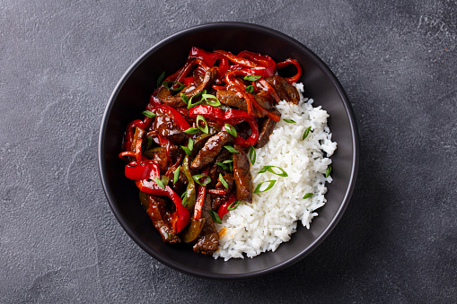

Wok

Description
This Asian specialty is quick and easy to make, but most importantly easily adaptable to the ingredients you have at home.
If you do not have basic ingredients and sauces for the Asian cuisine, such as soy sauce, oyster sauce and sesame oil, please get them if you want authentic flavours in your meal.
Ingredients
- onion
- carrot
- garlic
- ginger
- beef
- bell pepper
- soy sauce
- sesame oil
- oyster sauce
Steps
- Julienne onions, carrots, bell pepper and ginger.
- Slice beef onto thin strips.
- Mix all the listed liquids, add a bit of cornstarch and pour the mixture over beef. Let it rest.
- Cook rice in cold salted water.
- Fry beef in a very hot wok for three to four minutes and add more say sauce in the last thirty seconds.
- Serve with rice.